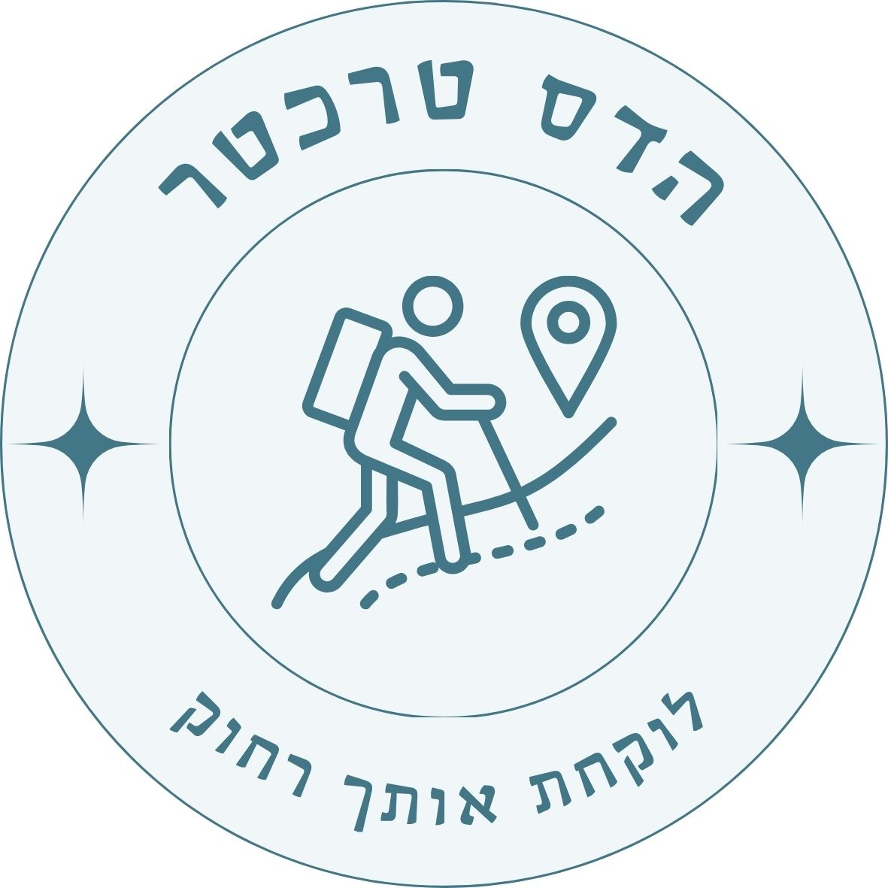

29/11-2/12
| שם אתר | עלות במטבע מקומי | עלות בש"ח (1.3) |
|---|---|---|
| מוזיאון יהדות גאורגיה אופציונלי | 10 לארי | 13 ₪ |
| שייט על נהר הקורה מזומן | 30 לארי | 39 ₪ |
| רכבל למצודת נרקילה (הלוך-ושוב, 3 לצד) | 6 לארי | 7.8 ₪ |
| אומגה לגנים הבוטניים אופציונלי | 50 לארי | 65 ₪ |
| מוזיאון האשליות אופציונלי | 50 לארי | 65 ₪ |
| פוניקולר מתאצמינדה (12×2 + 2 כרטיס) | 26 לארי | 33.8 ₪ |
| גלגל ענק בפארק מתאצמינדה | 10 לארי | 13 ₪ |
| יום טיול הרי הקווקז – נהגת מזומן | $250 (סה"כ לרכב) | מתחלק בין המשתתפות |
| טרקטורונים בהרי הקווקז (40 דק') אופציונלי מזומן | 150 לארי | 195 ₪ |
| אופנועי שלג בגודאורי (20 דק') אופציונלי מזומן | 150 לארי | 195 ₪ |
| מצנח רחיפה תצפית הידידות אופציונלי מזומן | 350 לארי | 455 ₪ |
| סה"כ אתרי המסלול הבסיסי לאדם (ללא אופציונלי) | 72 לארי | 93.6 ₪ |
| סה"כ עלויות לאדם (כולל כל האופציונלי והאקסטרים) | 832 לארי + חלק ב-$250 | 1,081.6 ₪ + חלק בהסעה |
| סה"כ אטרקציות במזומן בלבד לאדם | 30 לארי (בסיסי) / 680 לארי (עם אקסטרים) + חלק ב-$250 | 39 ₪ (בסיסי) / 884 ₪ (עם אקסטרים) + חלק בהסעה |